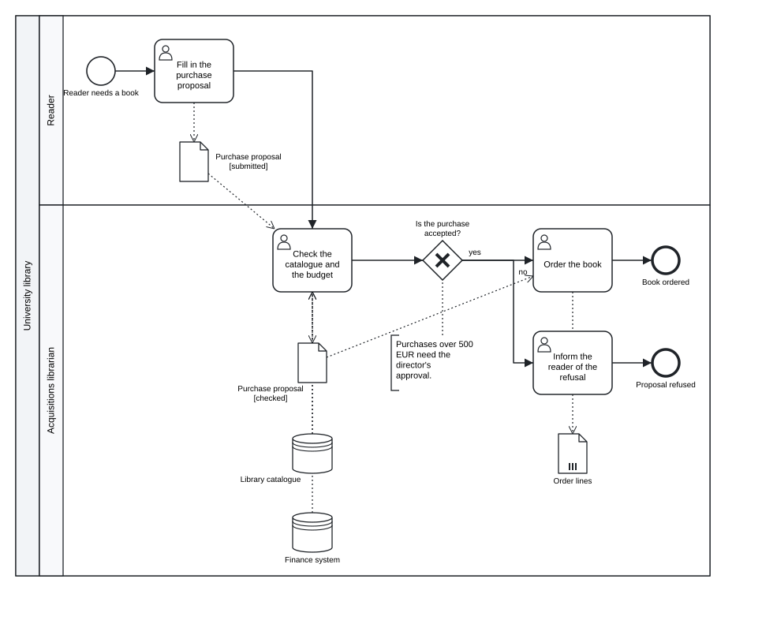
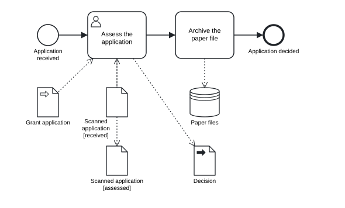

Chapter 6 Data, resources and artifacts
In this chapter you will show the documents and records a process uses with data objects, collections and data stores · connect them to activities and events with reads and writes · model the states of a document and its state transitions · declare item definitions, process inputs and outputs and properties · name the performers of activities with resources · add text annotations, groups and documentation to any element
The sequence flows of a process say in which order the work is done. They do not say what the work is done with: the application form, the catalogue, the decision letter, the case file. For an information institution this is often the more important half of the model. An archive’s process is largely a story of records that are received, registered, described, made available and destroyed; a library’s process is a story of requests, loans and catalogue records.
BPMN shows this half with data: data objects for the documents of one case, data stores for the systems and registers that outlive the case, and data associations for reading and writing them. It also has artifacts that do not change the meaning of the process but explain it to the reader: text annotations and groups. This chapter covers all of them, together with the declarations of process data and resources that make a model precise enough for analysis and execution.
6.1 Data objects
A data object stands for information that exists within one case of the process: the purchase proposal of this reader, the decision on this application. It is declared with data:
data proposal "Purchase proposal" state=submitted| Attribute | Meaning |
|---|---|
| label | the name of the document, shown under the symbol |
state="…" |
the state of the document at this point of the process, shown in square brackets |
collection |
the data object is a list of items (an order with several lines, a set of scans); drawn with three vertical bars |
object="Name" |
the name of the data object behind the reference, when several references share it (see below) |
type=ITEM |
the item definition of the data (see Process data) |
doc="Text" |
documentation |
Strictly speaking, BPMN distinguishes the data object (the information itself) from a data object reference (one appearance of it in the diagram, possibly in a particular state). Each data statement in tok is one reference with its own identifier. Normally each reference has its own data object. When the same document appears several times, for example in different states, give the references the same object="…": all data statements with the same object name in one process or sub-process share one data object in the BPMN file.
data proposal "Purchase proposal" state=submitted object="Purchase proposal"
data proposal-checked "Purchase proposal" state=checked object="Purchase proposal"A data element belongs to the process or sub-process in whose block it is declared. A data statement at the top level of a document with pools belongs to the process of the first activity that reads or writes it. The canonical form prints data statements at the end of the block they were declared in.
6.2 Data stores
A data store stands for information that persists beyond one case and is shared by many cases: a library catalogue, a records management system, a register of loans. It is declared with store:
store catalogue "Library catalogue"All store statements with the same label refer to one data store in the BPMN file; each statement is one reference in the diagram. A data store takes type= and doc= like a data object, but has no state and no collection flag.
The choice between a data object and a data store is a modelling decision. If the information is created for the case and ends with it (an application, a decision letter), it is a data object. If the case only consults or updates something that existed before and will exist afterwards (a catalogue, a finance system), it is a data store.
6.3 Reading and writing
A data element is connected to the work by a data association:
reads check proposal # the activity check reads the data object proposal
writes check proposal-checkedreads ACTIVITY DATA creates a data input association from the data element to the activity; writes ACTIVITY DATA creates a data output association from the activity to the data element. The diagram draws both as dotted arrows. The data element may be a data object, a data store, or one of the inputs, outputs and properties described later in this chapter.
Events can carry data too. A catching event (start, catch, boundary) can write the data it receives, for example a start event that writes the incoming application; a throwing event (end, throw) can read the data it sends. Writing from an end event, or reading into a start event, is the error R003, because it would make the event a step of work it cannot do.
The following model shows a reader’s proposal to buy a book for the library.
tok 1.0 "Book purchase proposal" doc="How the library handles a reader's proposal to buy a book."
pool library "University library"
lane reader "Reader"
start need "Reader needs a book"
user propose "Fill in the purchase proposal"
lane acquisitions "Acquisitions librarian"
user check "Check the catalogue and the budget" doc="Duplicates are rejected. The budget is read from the finance system."
xor accepted "Is the purchase accepted?"
user order "Order the book"
user refuse "Inform the reader of the refusal"
end ordered "Book ordered"
end refused "Proposal refused"
data proposal "Purchase proposal" state=submitted object="Purchase proposal"
data proposal-checked "Purchase proposal" state=checked object="Purchase proposal"
data order-lines "Order lines" collection
store catalogue "Library catalogue"
store finance "Finance system"
flow need -> propose -> check -> accepted
flow accepted -> order "yes"
flow accepted -> refuse "no"
flow order -> ordered
flow refuse -> refused
writes propose proposal
reads check proposal
reads check catalogue
reads check finance
writes check proposal-checked
reads order proposal-checked
writes order order-lines
note budget-rule "Purchases over 500 EUR need the director's approval." on=accepted
group decision-stage "Acquisition decision" members="check accepted"
Figure 6.1: Data objects in two states, a collection, two data stores, a text annotation and documentation.
Download the model (.tok) Download the BPMN export (.bpmn)
The reader fills in the proposal, which creates the data object in the state “submitted”. The acquisitions librarian reads it together with two data stores, the catalogue (is the book already there?) and the finance system (is there money in the budget?), and writes the proposal in the state “checked”. The ordering of the book writes the order lines, a collection. The model also uses the artifacts of the end of this chapter: a text annotation on the gateway, a group around the decision stage and documentation on the header and on one task.
The reads and writes lines are printed after the flows in the canonical form, in declaration order, so that a reader of the text finds all data associations in one place.
6.3.1 States and state transitions
A state transition is an activity that reads a document in one state and writes it in another. In the proposal model, check reads the proposal “submitted” and writes it “checked”. This is how a process model shows the life cycle of a record: received, registered, assessed, archived.
An activity that reads and writes a data object in the same state is suspicious: either the state has not changed, and the write is unnecessary, or it has, and the new state is missing. tok check reports it as the warning R064. The check compares the labels of the data objects, so give all states of one document the same label.
6.4 Process data
The data objects above describe documents for the human reader. A model meant for analysis or for a process engine often needs more: what type of information each element carries, what the process receives when it starts and returns when it ends, and which values an activity keeps for itself. BPMN describes this with item definitions, data inputs and outputs, and properties.
6.4.1 Item definitions
An item definition says what kind of information a data element holds. It is declared at the top level with item:
item application-type "Grant application" structure="Application"
item decision-type "Decision letter" structure="xsd:string" kind=information
item file-type "Paper file" kind=physical| Attribute | BPMN | Meaning |
|---|---|---|
| label | documentation |
an item definition has no name in BPMN; the label is its documentation |
structure=NAME |
structureRef |
the type: a name without a prefix (Application), an XML Schema type (xsd:string, xsd:decimal) or a name with another prefix |
namespace="URI" |
the namespace of that prefix | needed for a prefix other than xsd |
kind=information\|physical |
itemKind |
information (the default in BPMN) or a physical thing, such as a paper file or a box |
collection |
isCollection |
a list of such items |
A data element refers to its item definition with type=ITEM. A reference to an item that is not declared is the error R066; a structure= that is not a qualified name, or a kind= other than information and physical, is R013.
An XML Schema type uses the prefix xsd, which the exporter declares itself. Any other prefix needs namespace=, a prefix has one namespace in a document, and the prefixes the exporter uses for its own purposes (bpmn, bpmndi, dc, di, xsi, zeebe, modeler, xml) cannot be used for your own types:
item text-t "Text" structure="feel:string" namespace="https://www.omg.org/spec/DMN/20191111/FEEL/"In a document of language 1.0 an item can also be a DMN type: with type=, allowed= or a block of components it describes the type of the input data of a decision, not of a BPMN element. Chapter 9 describes DMN types. One item cannot be both (R081).
6.4.2 Inputs, outputs and properties
| Statement | BPMN | Meaning |
|---|---|---|
input ID "Label" [type=ITEM] [collection] [on=ID] |
dataInput |
data the process (or the activity named by on=) receives |
output ID "Label" [type=ITEM] [collection] [on=ID] |
dataOutput |
data it returns |
property ID "Label" [type=ITEM] [on=ID] |
property |
a value kept by the process, the activity or the event, not visible from outside |
Without on=, an input or output belongs to the process (or to the sub-process in whose block it stands): it is what the process needs to start and what it delivers when it ends. The diagram draws process inputs and outputs as data objects with a white or black arrow. With on=ACTIVITY, it belongs to that activity and is not drawn; it describes the interface of the activity. An input may also be declared on= an end or intermediate throw event, an output on a start, intermediate catch or boundary event, and a property on any event.
Every reads and writes line in a document of language 1.0 connects the data element with a data input or data output of the activity, as BPMN 2.0.2 requires. By default tok generates them, named after the data element (identifiers ACTIVITY-in-N, ACTIVITY-out-N). To connect the association to an input or output you declared yourself, name it with input=ID or output=ID:
input scan-in "Scan to assess" on=assess
reads assess scan input=scan-inAn input= that is not declared is R066; one that belongs to another activity is R013.
The assessment of a grant application uses all of these:
tok 1.0 "Assessing a grant application"
item application-type "Grant application" structure="Application"
item decision-type "Decision letter" structure="xsd:string" kind=information
item file-type "Paper file" kind=physical
start received "Application received"
user assess "Assess the application"
task archive "Archive the paper file"
end decided "Application decided"
input application "Grant application" type=application-type
output decision "Decision" type=decision-type
input criteria "Assessment criteria" collection on=assess
input scan-in "Scan to assess" on=assess
property reviews "Number of reviews" on=assess
data scan "Scanned application" state=received type=application-type
data scan-assessed "Scanned application" state=assessed
store files "Paper files" type=file-type
flow received -> assess -> archive -> decided
reads assess application
reads assess scan input=scan-in
writes assess scan-assessed
writes assess decision
writes archive files
Figure 6.2: A process input and output, data objects with an item definition, a data store of physical items. Inputs and properties of activities are not drawn.
Download the model (.tok) Download the BPMN export (.bpmn)
The process receives the grant application (input application) and returns the decision (output decision). The task assess has three data inputs: the criteria (a collection), the named input scan-in through which it reads the scan, and the input that tok generates for the application. It also has a property that counts the reviews. In the BPMN file the task carries its input-output specification:
<bpmn:userTask id="assess" name="Assess the application">
<bpmn:ioSpecification id="assess-io">
<bpmn:dataInput id="criteria" name="Assessment criteria" isCollection="true" />
<bpmn:dataInput id="scan-in" name="Scan to assess" />
<bpmn:dataInput id="assess-in-1" name="Grant application" />
<bpmn:dataOutput id="assess-out-3" name="Scanned application" />
<bpmn:dataOutput id="assess-out-4" name="Decision" />
...
</bpmn:ioSpecification>
<bpmn:property id="reviews" name="Number of reviews" />
<bpmn:dataInputAssociation id="assess-dia-1">
<bpmn:sourceRef>application</bpmn:sourceRef>
<bpmn:targetRef>assess-in-1</bpmn:targetRef>
</bpmn:dataInputAssociation>
...You rarely need to read this XML, but it shows why the declarations exist: a BPMN tool or engine that imports the file finds a complete, typed interface for every activity.
Process data belongs to the precise end of modelling. Item definitions, inputs, outputs and collections are elements of BPMN’s Common Executable conformance class; properties and data states are outside the three sub-classes and belong only to the full language (Chapter 7). The levels basic and analytic of tok check reject item, input, output, property and type= on data. A descriptive model does not need them: data objects, stores and associations already tell the reader what the work is done with.
6.5 Resources and performers
Lanes (Chapter 4) show who is responsible for the activities they contain: a department, a role, a system. BPMN has a second, more precise way to say who performs an activity: resources and performers.
tok 1.0 "Lending a book at the desk"
start arrived "Reader at the desk"
user lend "Check the reader's account" by=librarian
service record "Record the loan" by=system
manual hand-over "Hand over the book" by=librarian
end lent "Book lent"
flow arrived -> lend -> record -> hand-over -> lent
resource librarian "Librarian" count=2
resource system "Library system"Download the model (.tok) Download the BPMN export (.bpmn)
resource ID "Label" declares a resource; by=ID on an activity names the resource that performs it. In a document of language 1.0 the export writes a BPMN resource and, for each activity with by=, a performer that refers to it: a humanPerformer on user and manual tasks, a performer on the others.
<bpmn:resource id="librarian" name="Librarian" />
<bpmn:resource id="system" name="Library system" />
<bpmn:process id="process" name="Lending a book at the desk" isExecutable="false">
<bpmn:startEvent id="arrived" name="Reader at the desk" />
<bpmn:userTask id="lend" name="Check the reader's account">
<bpmn:humanPerformer id="lend-performer">
<bpmn:resourceRef>librarian</bpmn:resourceRef>
</bpmn:humanPerformer>
</bpmn:userTask>
<bpmn:serviceTask id="record" name="Record the loan">
<bpmn:performer id="record-performer">
<bpmn:resourceRef>system</bpmn:resourceRef>
</bpmn:performer>
</bpmn:serviceTask>Performers are not drawn: the diagram stays the same. The same statements serve the simulation of Chapter 11: there count=2 says that two librarians work at the desk, and an activity with by= waits until one of them is free. count= is a simulation setting only; it does not appear in the BPMN file.
Lanes and resources answer different questions and can be used together. A lane is a part of the diagram: everything drawn in it is the responsibility of that role. A resource is an attribute of one activity, independent of the drawing, and it can be counted, which a lane cannot. Use lanes when the reader of the diagram should see responsibilities at a glance, and resources when the model is analysed or simulated.
The executable layer has its own assignment of user tasks to people and groups (assignee=, candidate-groups=); it is described in Chapter 10 and is independent of by=.
6.6 Text annotations
A text annotation (note) adds a comment to the diagram. With on=ID it is connected by a dotted line (an association) to the element it explains:
note budget-rule "Purchases over 500 EUR need the director's approval." on=acceptedWithout on=, the note stands alone. An annotation does not change the meaning of the process, but it is part of the BPMN model and every BPMN tool shows it. Use it for information the reader of the diagram needs and the symbols cannot show: a rule behind a decision, a legal basis, a known problem. A comment (#) is different: it is part of the text only, for the people who edit the model, and it never reaches the BPMN file.
6.7 Groups
A group marks elements that belong together for the reader, across lanes and pools, without affecting the flow: a stage of the process, the activities covered by one regulation, the part of a process that an IT system supports.
group decision-stage "Acquisition decision" members="check accepted"members= lists the identifiers of the elements in the group. The BPMN export writes the group with its label (as a category value), but BPMN stores no list of members: a group is only a shape drawn around the elements. The automatic layout of tok does not draw groups. A group gets its shape when the model has a layout sidecar, for example after importing a drawing from a graphical editor (Chapter 8); the members are then a record, in the text, of what the group means. When you import a BPMN file with groups, tok import reports that the membership must be added by hand.
6.8 Documentation
Every element that BPMN can document accepts doc="Text": flow nodes, flows, message flows, pools, lanes, data objects, stores, inputs, outputs, properties, notes, groups, global tasks, interfaces and operations, and in language 1.0 also conversations and choreographies. The text becomes the documentation of the element in the BPMN file, and BPMN tools show it in the properties panel.
user check "Check the catalogue and the budget" doc="Duplicates are rejected. The budget is read from the finance system."On the header, doc= documents the process of a document without pools, or the whole model (the definitions element) of a document with pools. The text is plain; \n makes a line break.
Documentation, annotations and comments have different readers:
| Form | Reader | Where it appears |
|---|---|---|
# comment |
the people who edit the text | only in the .tok file |
note |
the reader of the diagram | as a shape on the diagram, and in the BPMN file |
doc= |
the user of a BPMN tool or engine | in the properties of the element, and in the BPMN file |
6.9 Typical mistakes
The following model of registering a thesis contains several mistakes with data.
tok 1.0 "Registering a thesis"
item thesis-type "Thesis" structure="Thesis"
start submitted "Thesis submitted"
user check "Check the thesis"
user register "Register the thesis"
end registered "Thesis registered"
data thesis "Thesis" state="submitted" type=thesis-type
data thesis-checked "Thesis" state="submitted"
data report "Plagiarism report" type=report-type
store repository "Thesis repository"
flow submitted -> check -> register -> registered
reads check thesis
writes check thesis-checked
writes check report
reads register thesis-checked
writes register repositry
writes registered thesis-checked
note check-rule "Theses are checked within 14 days." on=chektok check 06-data-error.tok
06-data-error.tok:11: error R066: unknown item definition 'report-type'; declare it with 'item'
06-data-error.tok:16: warning R064: activity 'check' reads and writes data object 'Thesis' in the same state 'submitted'; a state transition writes another state
06-data-error.tok:20: error R002: unknown data object or store 'repositry'
06-data-error.tok:21: error R003: 'registered' is a 'end' element; required here: activity, start, intermediate catch or boundary event
06-data-error.tok:23: error R002: unknown flow node 'chek'
06-data-error.tok: 4 error(s), 1 warning(s), 0 note(s)| Code | Problem | Correction |
|---|---|---|
R066 |
type=report-type names an item that is not declared |
declare item report-type "Plagiarism report", or remove type= |
R064 |
the checked thesis has the same state as the submitted one | give thesis-checked the state checked |
R002 |
a typing error in an identifier (repositry, chek) |
write repository and check |
R003 |
an end event cannot write data; it can only read the data it sends | use reads registered thesis-checked, or remove the line |
Exercises
Exercise 6.1
- Fix the thesis. Download
06-data-error.tokand correct it untiltok checkreports no errors and no warnings. Draw the diagram and check that the thesis appears in two states. Download the model with errors (.tok) - The life cycle of a record. In a university registry an incoming letter is registered, assigned to a case, answered and archived. Model the process with one data object “Letter” in four states and a data store “Records system”, so that every activity is a state transition. Give all references of the letter the same
object=, and check thattok checkreports noR064. - Object or store? For each of these, decide whether it is a data object or a data store and give a reason: a reader’s account, an interlibrary loan request, the union catalogue, a scan of a manuscript, the access log of a digital repository, the minutes of an appraisal committee.
- Process interface. Extend the reading room request of Chapter 2 (or your own model) with a process input “Request”, a process output “Answer”, item definitions for both and a property “Number of reminders” on the task that waits for the reader. Export the BPMN file and find the
ioSpecificationof the process in it. - Performers. Add resources and
by=to a process of your own with at least two roles. Compare the result with a version that uses lanes for the same roles. Which version would you give to the head of department, and which to someone who simulates the workload? - Annotations and documentation. Take a model from an earlier chapter and add a text annotation with the legal basis of one decision, a group around one stage, and documentation on the header and on two tasks. Explain in two sentences what each addition tells which reader.